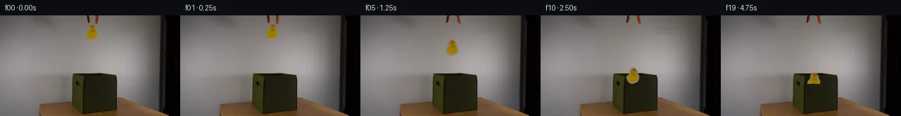

![首帧]()

Round 00
2026-11-05T01:49:58.130492+00:00像素候选变化代码 +282/−0inspection 更新
pixels d84575f5f9ca83c1 · code 5c2a69b785412c06
查看本轮 generate.py 真实 diff
--- previous/generate.py +++ current/generate.py @@ -0,0 +1,282 @@ +#!/usr/bin/env python3 +"""Generate the 20-frame PixelWorld continuation using local pixel operations.""" + +from pathlib import Path + +import numpy as np +from PIL import Image, ImageDraw, ImageFont +from scipy import ndimage + +from artifact_io import save + + +ROOT = Path(__file__).resolve().parent +W, H = 256, 144 + + +def over_rgb(dst, src, alpha): + """Alpha-composite RGB arrays, with alpha in [0, 1].""" + a = np.asarray(alpha, dtype=np.float32)[..., None] + out = np.asarray(dst, dtype=np.float32) * (1.0 - a) + out += np.asarray(src, dtype=np.float32) * a + return np.clip(np.rint(out), 0, 255).astype(np.uint8) + + +def clean_object_zone(source): + """Reconstruct the smooth neutral wall behind the initial tool and duck.""" + base = source.copy().astype(np.float32) + x0, x1 = 117, 145 + # Horizontal interpolation follows the measured background gradient per row. + for y in range(0, 39): + left = source[y, x0 - 2:x0 + 1].mean(axis=0).astype(np.float32) + right = source[y, x1:x1 + 3].mean(axis=0).astype(np.float32) + for x in range(x0, x1 + 1): + u = (x - x0 + 1) / (x1 - x0 + 2) + base[y, x] = left * (1.0 - u) + right * u + # Match the faint local sensor texture deterministically using neighboring rows. + for y in range(1, 38): + smooth = base[y, x0:x1 + 1] + reference = 0.5 * ( + source[y, x0 - 5:x0 - 2].mean(axis=0) + + source[y, x1 + 3:x1 + 6].mean(axis=0) + ) + correction = np.clip(reference - smooth.mean(axis=0), -2.0, 2.0) + base[y, x0:x1 + 1] += correction + return np.clip(np.rint(base), 0, 255).astype(np.uint8) + + +def largest_component(mask): + labels, count = ndimage.label(mask) + if count == 0: + return mask + sizes = ndimage.sum(mask, labels, range(1, count + 1)) + return labels == (int(np.argmax(sizes)) + 1) + + +def extract_duck(source, clean): + """Extract the actual yellow duck, retaining its dark enclosed facial details.""" + yy, xx = np.mgrid[0:H, 0:W] + r = source[..., 0].astype(np.int16) + g = source[..., 1].astype(np.int16) + b = source[..., 2].astype(np.int16) + candidate = ( + (xx >= 120) & (xx <= 141) & (yy >= 12) & (yy <= 37) + & (r > 105) & (g > 65) & (b < 105) + & (r - b > 35) & (g - b > 22) + ) + core = largest_component(candidate) + silhouette = ndimage.binary_fill_holes(core) + silhouette = ndimage.binary_closing(silhouette, iterations=1) + silhouette = ndimage.binary_dilation(silhouette, iterations=1) + # Keep a soft one-pixel antialiased contour but a fully opaque interior. + alpha = ndimage.gaussian_filter(silhouette.astype(np.float32), 0.55) + alpha = np.clip(alpha / max(float(alpha.max()), 1e-6), 0.0, 1.0) + alpha[ndimage.binary_erosion(silhouette, iterations=1)] = 1.0 + # Suppress any blur leakage beyond a narrow support. + alpha[~ndimage.binary_dilation(silhouette, iterations=1)] = 0.0 + x0, x1, y0, y1 = 118, 143, 11, 39 + return source[y0:y1, x0:x1].copy(), alpha[y0:y1, x0:x1].copy(), (x0, y0) + + +def extract_tool_layers(source, clean): + """Create two source-pixel finger layers from their measured top-edge regions.""" + diff = np.max(np.abs(source.astype(np.int16) - clean.astype(np.int16)), axis=2) + layers = [] + for x0, x1 in ((121, 132), (132, 143)): + region = np.zeros((H, W), dtype=bool) + region[0:16, x0:x1] = True … diff truncated; 195 more lines …